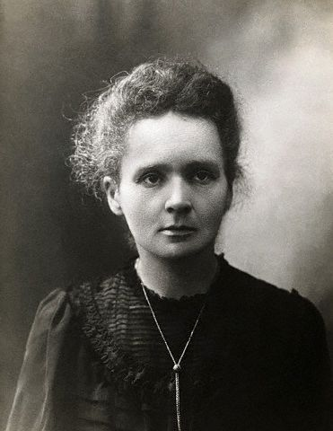

A mulher da Radioatividade

Marie Skłodowska Curie foi uma cientista polonesa com naturalização francesa que conduziu pesquisas pioneiras no ramo da radioatividade.
Marie Skłodowska Curie foi uma cientista polonesa com naturalização francesa que conduziu pesquisas pioneiras no ramo da radioatividade.
"..As conquistas de Marie incluem a teoria da radioatividade (termo que ela mesma cunhou), técnicas para isolar isótopos radioativos e a descoberta de dois elementos, o polônio e o rádio. Sob a direção dela foram conduzidos os primeiros estudos sobre o tratamento de neoplasmas com o uso de isótopos radioativos..."
Marie Skłodowska Curie (Varsóvia, 7 de novembro de 1867 — Passy, Sallanches, 4 de julho de 1934) foi uma cientista polonesa com naturalização francesa que conduziu pesquisas pioneiras no ramo da radioatividade. Foi a primeira mulher a ser laureada com um Prémio Nobel e a primeira pessoa e única mulher a ganhar o prêmio duas vezes. A família Curie ganhou um total de cinco prêmios Nobel. Marie Curie foi a primeira mulher a ser admitida como professora na Universidade de Paris. Em 1995, a cientista se tornou a primeira mulher a ser enterrada por méritos próprios no Panteão de Paris. Nascida Maria Salomea Skłodowska em Varsóvia, no então Reino da Polônia, parte do Império Russo. Estudou na Universidade Floating, em Varsóvia, onde começou seu treino científico. Em 1891, aos 24 anos, seguiu sua irmã mais velha, Bronislawa, para estudar em Paris, cidade na qual conquistou seus diplomas e desenvolveu seu futuro trabalho científico. Em 1903, Marie dividiu o Nobel de Física com o seu marido Pierre Curie e o físico Henri Becquerel. A cientista também foi laureada com o Nobel de Química em 1911. As conquistas de Marie incluem a teoria da radioatividade (termo que ela mesma cunhou), técnicas para isolar isótopos radioativos e a descoberta de dois elementos, o polônio e o rádio. Sob a direção dela foram conduzidos os primeiros estudos sobre o tratamento de neoplasmas com o uso de isótopos radioativos. A cientista fundou os Institutos Curie em Paris e Varsóvia,que até hoje são grandes centros de pesquisa médica. Durante a Primeira Guerra Mundial, fundou os primeiros centros militares no campo da radioatividade. Apesar da cidadania francesa, Marie Curie nunca deixou sua identidade polonesa de lado. Ensinou suas duas filhas a falar em polonês e as levou em viagens para a Polônia. Nomeou o primeiro elemento químico que descobriu de polônio, em homenagem ao seu país de origem. Marie Curie morreu aos 66 anos, em 1934, em um sanatório em Sancellemoz, na França, por conta de uma leucemia causada pela exposição a radiação ao carregar testes de rádio em seus bolsos durante a pesquisa e ao longo de seu serviço na Primeira Guerra, quando montou unidades móveis de raio-X.
Fonte das imagens: InfoEscola | Bigblogg.info | InfoEscola